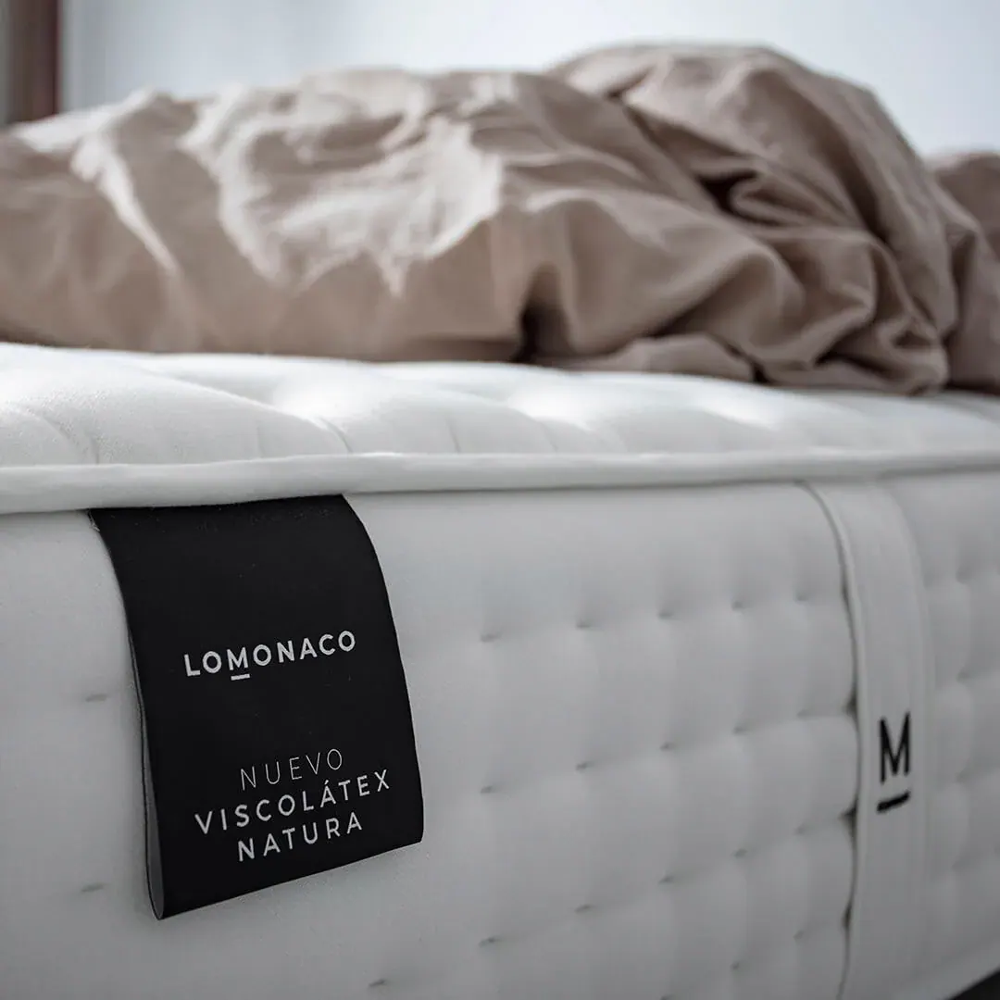
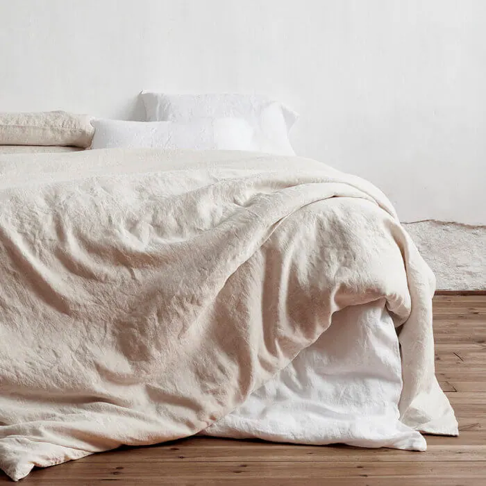

Cómo ventilar el dormitorio y dormir mejor

¿Sabes que la ventilación del dormitorio es clave para un sueño reparador? ¡Descubre cómo mejorar la calidad del aire y dormir mejor!
La ventilación es esencial para mantener un ambiente saludable y fresco en nuestra hogar, especialmente en el dormitorio, donde pasamos una tercera parte de nuestra vida. Un dormitorio bien ventilado no solo nos hace sentir cómodos, sino que también es fundamental para un sueño reparador y de calidad.
¿Por qué es importante ventilar el dormitorio?
- La ventilación elimina el aire viciado y lo reemplaza con aire fresco, lo que ayuda a reducir la concentración de dióxido de carbono y otros contaminantes que pueden afectar nuestra salud.
- Un dormitorio bien ventilado ayuda a regular la temperatura y la humedad, lo que puede mejorar la calidad del sueño.
- La ventilación también ayuda a eliminar los olores y los alérgenos que pueden perturbar nuestro sueño.
¿Cómo ventilar el dormitorio?
- La ventilación natural es la mejor opción. Abre las ventanas y las puertas para permitir que el aire fresco circule en el dormitorio.
- Si no es posible ventilar de forma natural, puedes utilizar ventiladores o sistemas de ventilación mecánica.
- Asegúrate de cambiar las sábanas y la ropa de cama con regularidad para mantener un ambiente limpio y fresco.
¿Cuándo ventilar el dormitorio?
- Lo ideal es ventilar el dormitorio durante el día, cuando no estás durmiendo.
- Si no es posible, puedes ventilar durante la noche, pero asegúrate de que el aire que entra sea fresco y limpio.
Consecuencias de no ventilar el dormitorio
- Un dormitorio mal ventilado puede provocar problemas de salud, como alergias y enfermedades respiratorias.
- La falta de ventilación también puede afectar la calidad del sueño, lo que puede tener consecuencias negativas en nuestra salud y bienestar.
¿Qué relación hay entre la ventilación y el sueño?
- La ventilación es fundamental para un sueño reparador. Un estudio reciente demostró que las personas que duermen en habitaciones bien ventiladas tienen un sueño más profundo y de mejor calidad.
- La ventilación también ayuda a regular la temperatura y la humedad, lo que puede mejorar la calidad del sueño.
Conclusión
La ventilación del dormitorio es fundamental para un sueño reparador y de calidad. Al ventilar el dormitorio, podemos eliminar el aire viciado, reducir la concentración de dióxido de carbono y otros contaminantes, y regular la temperatura y la humedad. ¡No esperes más y asegúrate de ventilar tu dormitorio para dormir mejor y sentirte más fresco y cómodo!
¿Cuándo ventilar?
Ventilación parcial
Este tipo de ventilación es la que solemos hacer, consiste en abrir parcialmente la ventana de la habitación que queremos airear y dejarla así durante un tiempo prolongado. Es la ventilación ideal para nuestro dormitorio, sobre todo, cuando nos acabamos de levantar y la habitación ha estado cerrada un largo período.
Ventilación instantánea
Esta consiste en abrir la ventana o puerta completamente pero por un periodo corto de tiempo. Evidentemente, este modo de ventilación se tiene que realizar varias veces al día (se recomienda unas 2 o 3 veces) si estamos usando la habitación de forma continua.
Para ventilar, tendremos siempre en cuenta la estación del año en la que nos encontramos, aprovechando en verano las primeras horas por la mañana para que entre aire fresco. Sin embargo, en invierno hay que abrir lo justo para airear consiguiendo de este modo ahorrar dinero en electricidad.

Consejos en la ventilación del dormitorio
- Ventilar el dormitorio por la mañana durante aproximadamente 10 minutos, así evitamos la acumulación aire viciado.
- Si en casa hay alguien que está enfermo, es de especial interés ventilar su dormitorio de forma regular.
- Colocar los ventiladores y el aire acondicionado justo al contrario a las entradas de aire exterior, facilitando así su función de ventilación.
Consejos en la ventilación del dormitorio
- Ventilar el dormitorio por la mañana durante aproximadamente 10 minutos, así evitamos la acumulación de aire viciado.
- Si en casa hay alguien que está enfermo, es de especial interés ventilar su dormitorio de forma regular.
- Colocar los ventiladores y el aire acondicionado justo al contrario a las entradas de aire exterior, facilitando así su función de ventilación.
Ventilar la cama
Una parte fundamental de nuestro dormitorio es la cama, que debe siempre ventilarse para mantener sus parámetros de salubridad. Diariamente durante la ventilación del dormitorio la cama debe estar sin hacer durante un corto espacio de tiempo, posteriormente cuando nos dispongamos a hacer la cama debemos sacudir las sábanas para facilitar la ventilación de las mismas.
Cuándo cambiemos las sábanas (recordemos que deben cambiarse una vez a la semana), dejaremos un largo espacio de tiempo, la cama sin vestir para facilitar la ventilación del colchón en su interior.
(Fuente: Mishra AK, van Ruitenbeek AM, Loomans MGLC, Kort HSM. Window/door opening-mediated bedroom ventilation and its impact on sleep quality of healthy, young adults. Indoor Air. 2017;00:1–13. https://doi.org/10.1111/ina.12435)